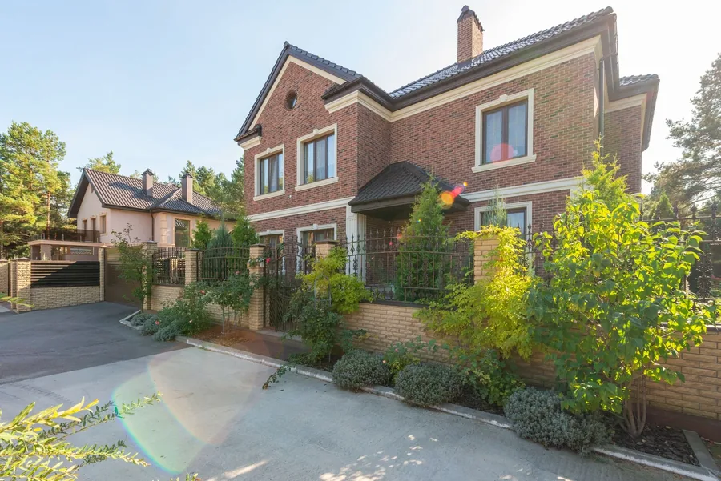
Block paving driveways
Concrete or clay block in any pattern and colour, with a proper kerb edge and kiln dried sand compacted into every joint.
Block paving, resin and natural stone across Sheffield, laid on a dug out, compacted sub base that will not sink or rut. A fixed written price after a site visit, and a ten year guarantee on everything we lay.
Sunken blocks, ruts and puddles are almost always a thin sub base. We dig down 200mm, lay and compact the stone in layers, and only then put down the surface you picked.
What we lay
Whatever goes on top, the base, the edging and the drainage are done the same way.

Concrete or clay block in any pattern and colour, with a proper kerb edge and kiln dried sand compacted into every joint.
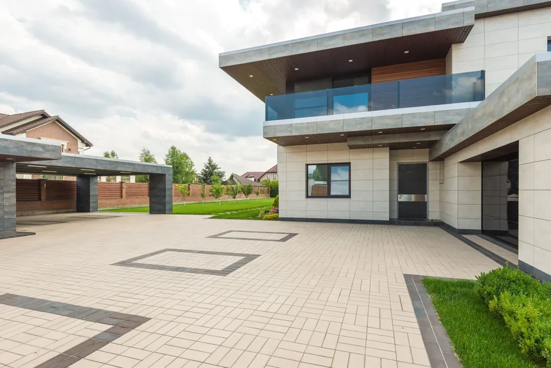
Smooth, permeable and weed free, laid on an open grade base so rain drains straight through and planning is rarely needed.
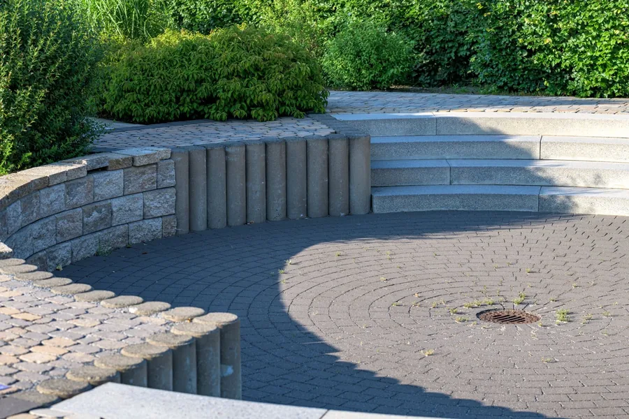
Indian sandstone, porcelain and granite, laid on a full mortar bed with falls away from the house and steps built to proper rises.
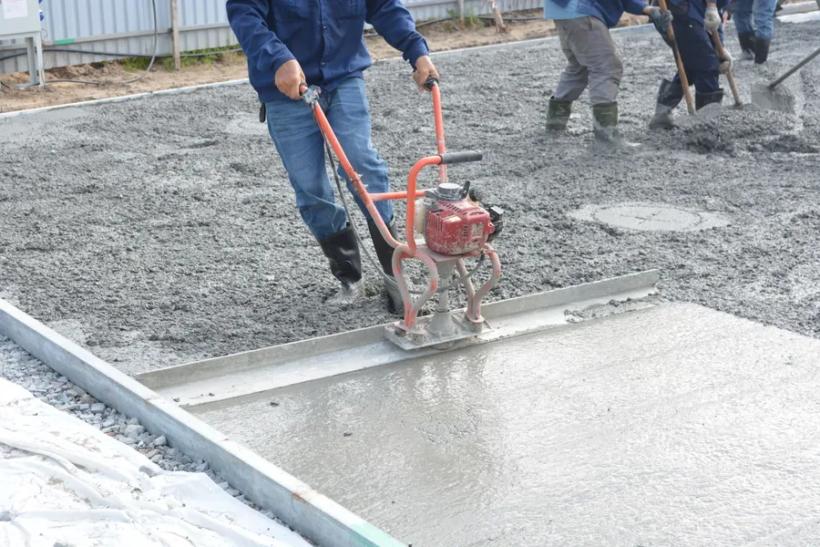
Excavation, sub base, channel drains, soakaways and dropped kerb applications with the council, all handled in house.
How it works
The site visit decides whether the other two go well.
Step 01
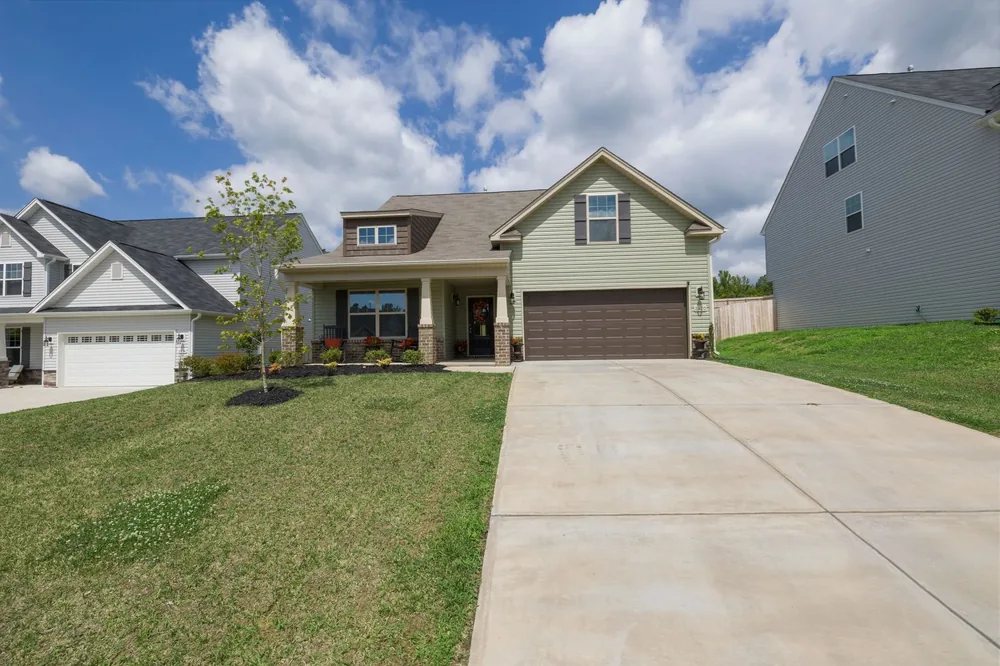
Step 02
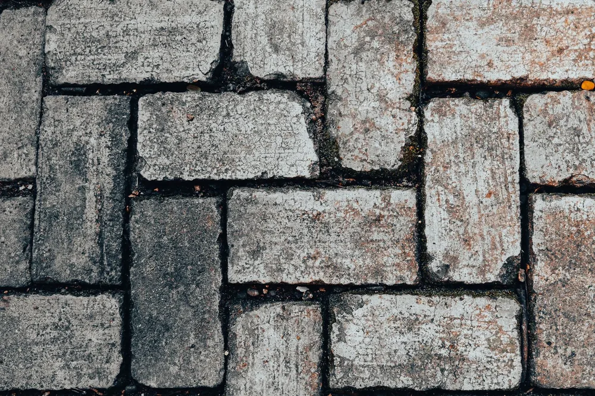
Step 03
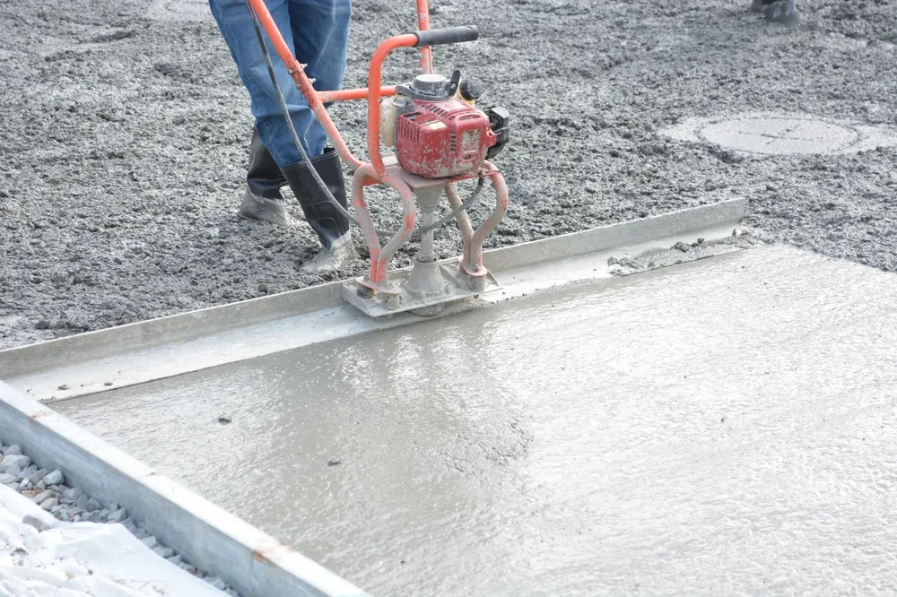
Driveways
If yours is not on here, it is almost certainly still a yes. Ask.
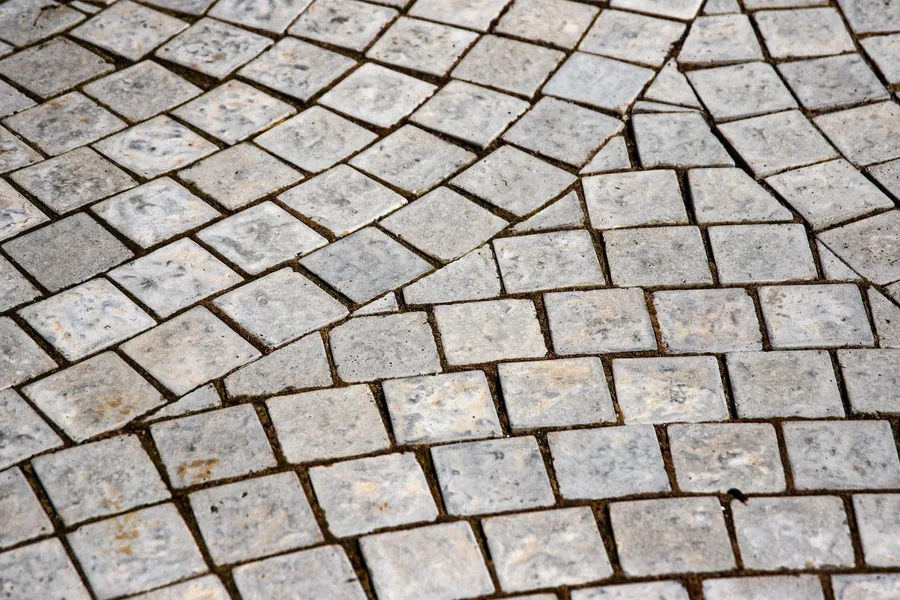
Block paving
Laid in patterns that lock together under the weight of a car, with a solid kerb edge so nothing creeps. From 95 pounds a square metre.
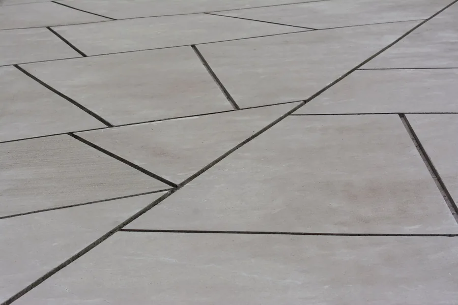
Porcelain
Frost proof, stain proof and almost no upkeep, laid on a full mortar bed with narrow joints. From 120 pounds a square metre.
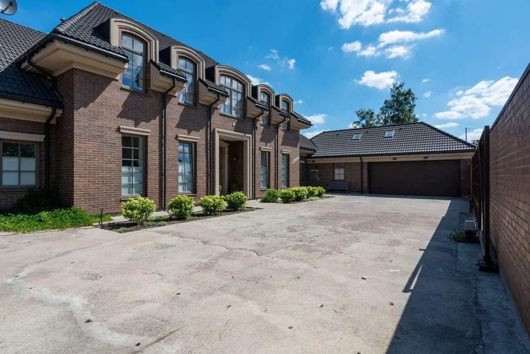
Resin bound
Permeable, so it meets the planning rules for front gardens without a soakaway, and smooth enough for a pram or a wheelchair. From 85 pounds a square metre.
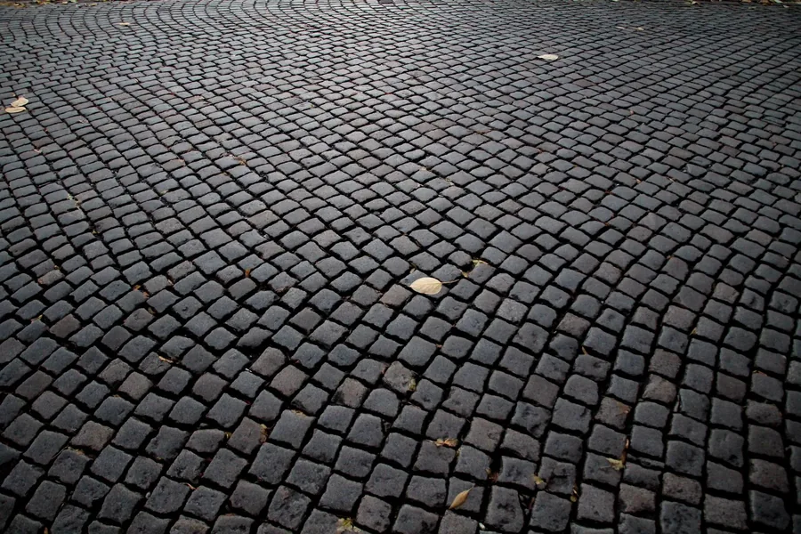
Natural stone
Hard wearing, traditional and right for older Sheffield stone houses. Laid on a proper base so they stay flat for decades.
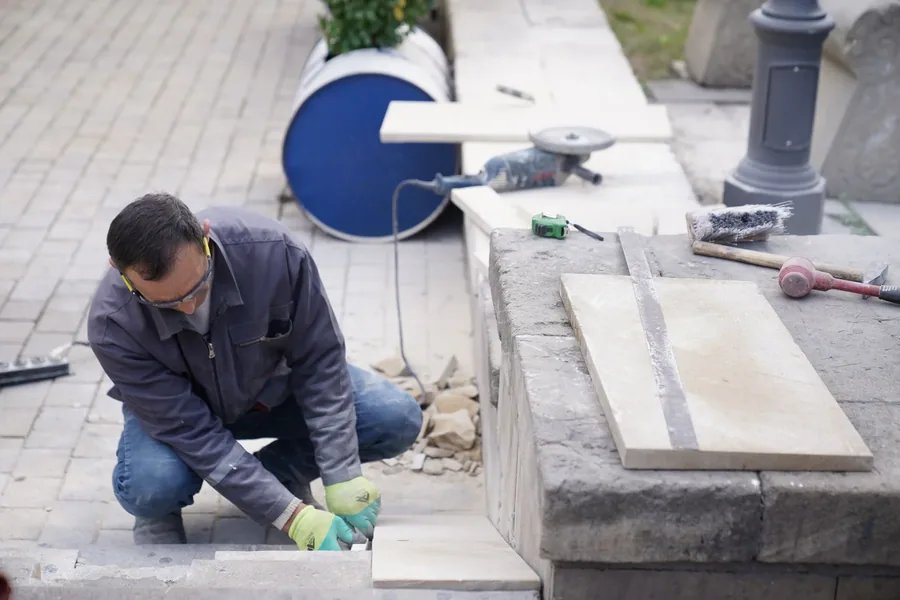
Edging
Kerb edges, soldier courses, planter borders and steps built to proper rises, so the drive has a finished edge rather than a ragged one.
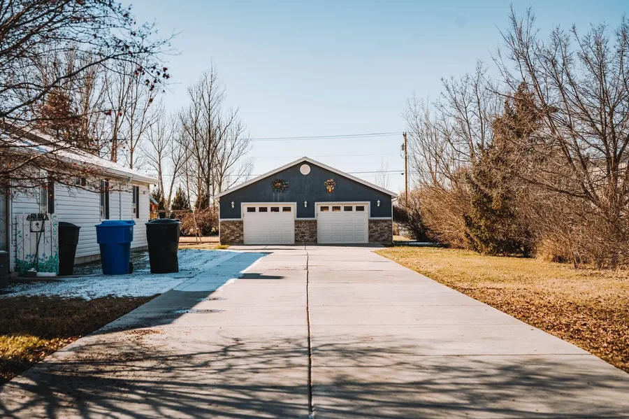
Drainage
Channel drains, soakaways and the council application for a dropped kerb, so water goes where it should and you can legally cross the pavement.
Reviews
Three driveways laid this year, all still flat after the winter.
Crookes

Ecclesall

Dore

Contact
An hour on site with samples of every surface, and a fixed written price within three working days.
Book a site visit